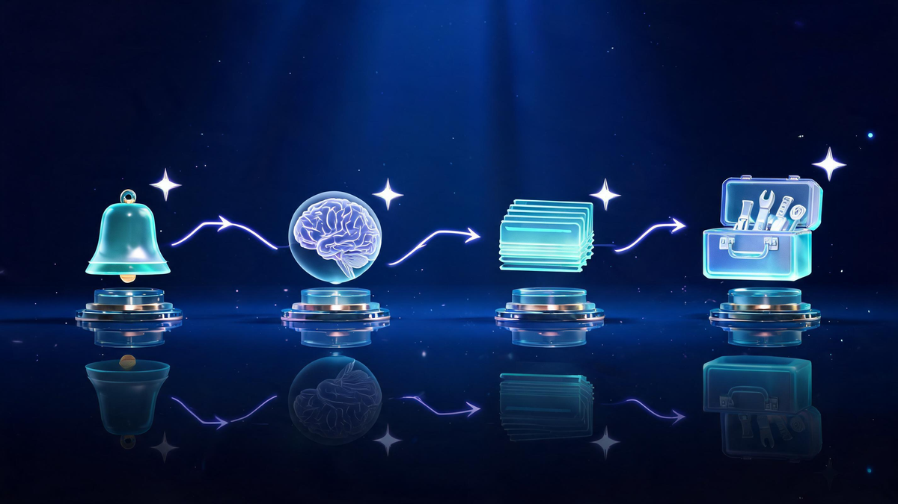

How to Build AI Agents Without Coding (2026): Step-by-Step Guide

Quick answer
Yes, you can build a working AI agent without code in one afternoon. Every agent needs four parts — trigger, brain, memory, tools — and platforms like n8n (free if self-hosted), MindStudio (~$20/mo), Gumloop (free tier) and Lindy (~$29/mo) let you assemble them visually. Pick one repetitive task, wire the four parts, test edge cases, deploy. Here's the full walkthrough.
In this guide
Key Takeaways
- Task-scoped agents are genuinely buildable without code — an afternoon per agent, not months.
- Every agent = trigger + brain + memory + tools; master the four-part anatomy and platforms become interchangeable.
- n8n is the only truly-free option (open source, self-hosted); Gumloop and Pickaxe have usable free tiers.
- "Best platform" lists are mostly written by the platforms themselves — check integrations against your stack instead.
- Human-approval checkpoints turn risky experiments into business-safe automations.
You can build a working AI agent without writing a single line of code — and 2026's no-code platforms have made it an afternoon project, not a development cycle. This guide walks the full path: what "no-code" honestly means, the four-part anatomy every agent shares, a seven-step build process, a concrete first-agent walkthrough, and a neutral comparison of the platforms worth your time.
Most "best AI agent builder" lists you'll find are written by the builders themselves — Gumloop ranking Gumloop, Lindy ranking Lindy. This one isn't. Every platform claim below is sourced, priced as of October 2026, and framed around one question: what do you actually need to ship your first working agent?
"No-Code" — What's Real and What's Marketing
Let's clear the skepticism first, because the community's is earned. Reddit's AI-builder threads are full of complaints about platforms that promise no-code and then demand JavaScript at step three. The honest line: configuring an agent is not programming, but it is engineering-lite — you'll think in logic, sequences and edge cases.
Three tell-tale signs a platform is genuinely no-code: the visual canvas covers all core logic (not just the happy path), error states are handled through configuration (retry rules, fallback branches), and the pricing page doesn't hide "developer plan required" behind the good features. Every platform recommended below passes those three tests for common use cases.
The 4-Part Anatomy of Every AI Agent
Strip away the vendor jargon and every agent — from a simple email bot to an enterprise research assistant — has exactly four organs:

- The Trigger — what starts the agent: a new email arrives, a form is submitted, a schedule fires. Weak triggers are the #1 reason agents misfire — define exactly what input counts.
- The Brain — the AI model that reads the input and decides what to do. Here's the counterintuitive part: model choice matters less than instruction quality. A mediocre model with a sharp prompt beats a flagship model with a vague one.
- The Memory — what the agent remembers: short-term (this conversation) or long-term (a database of past runs). Memory is what separates a one-shot chatbot from an agent that improves with context.
- The Tools — the actions it can take: send email, update a spreadsheet, call an API, search the web. Tools are where agents get their power — and where permissions need the most care.
Get those four right and the platform barely matters — most builders are just different canvases for the same anatomy.
The 7 Steps to Build Your First Agent
The build process is identical across platforms. Seven steps, in order:
- Pick ONE specific repetitive task — calendar triage, invoice sorting, FAQ replies. Not "an assistant" — an assistant for exactly one thing.
- Document the steps manually once — write down every action you take doing the task by hand. This becomes your agent's blueprint.
- Choose the platform by integration need — the platform whose tool library already speaks to your email/sheets/CRM wins, regardless of brand.
- Wire trigger → brain → memory → tools — the four-part anatomy, in order, on the visual canvas.
- Test with real inputs — including the weird ones. A mis-formatted email is where agents break.
- Add a human-approval checkpoint for anything risky — sends, deletes, payments. Every serious platform supports approval gates; use them from day one.
- Deploy, monitor, iterate weekly — agents drift as inputs drift; a 15-minute weekly review keeps them sharp.
Walkthrough: An Email-Triage Agent in One Afternoon
Concrete beats abstract. Here's the classic first build — an email triage agent — sketched on the anatomy:
- Trigger: new email arrives in the support inbox.
- Brain: the model classifies it — invoice, support request, or noise — using a prompt with three examples per category.
- Memory: every classification logs to a spreadsheet with timestamp and confidence; repeat senders get flagged.
- Tools: apply the matching label, draft a reply for support requests, and route anything high-stakes to a human-approval checkpoint before anything sends.
On any major platform this configures in 2–3 hours including testing. The prompt is the only "writing" involved — and it's plain English: "Classify this email as invoice, support, or noise. If support, draft a reply acknowledging the issue with a 24-hour response promise."
Best No-Code AI Agent Platforms (2026)
The vendor-neutral view — what each platform is actually best at, with pricing as of October 2026:
| Platform | Best For | Pricing (Oct 2026) | Free Option |
|---|---|---|---|
| n8n | Workflow-heavy agents, self-hosted control | Cloud from ~$37/mo | Yes — open-source self-host |
| MindStudio | AI-native apps, 100+ templates | From $20/mo (vendor-stated) | Trial credits |
| Gumloop | Marketing & ops automations | From $37/mo (vendor-stated) | Free tier |
| Lindy | Quick AI-native assistants | From ~$29/mo | Trial credits |
| Pickaxe | Creators & branded AI apps | Freemium (vendor-stated) | Yes |
Reading the table honestly: n8n wins on control and cost-if-technical (self-hosting needs some setup patience), MindStudio wins on template speed for AI-native apps, Gumloop fits marketing-ops teams already living in those workflows, Lindy is the fastest assistant assembler, and Pickaxe suits creators shipping branded tools. There is no universal winner — the platform whose tool library already matches your stack is your best platform.
Free Options Compared Honestly
"Free" has three different meanings in this market, and conflating them causes disappointment:
- Open-source free (n8n): genuinely zero cost if you self-host — the trade-off is running it yourself, which needs modest technical comfort. The only unlimited free lane.
- Freemium tiers (Gumloop, Pickaxe): real free plans with execution caps — enough for a first agent or two, not for production volume.
- Trial credits (MindStudio, Lindy): full features for a limited runway — perfect for the walkthrough above, then paid.
Start free-tier or trial for your first two or three agents. Upgrade only when an agent has proven it saves more than it costs — the discipline matters more than the platform.
What Skills Replace Coding
Three replaceable skills, none of which is programming:
- Process thinking: documenting what you do manually, step by step, without skipping the invisible steps ("check if the attachment exists"). Agents fail on undocumented steps, not hard ones.
- Prompt writing: instructing the brain in precise plain language — examples beat adjectives, constraints beat vibes.
- Data hygiene: knowing what clean inputs and outputs look like, and refusing to let the agent guess.
If you can write a recipe that a stranger could cook from, you have the core skill. The rest is canvas familiarity, which any platform tutorial covers in an hour. For where agent platforms are heading next — enterprise adoption, pricing shifts, the players to watch — our AI agent platforms guide for 2026 covers the market landscape in depth.
Deploy, Monitor, Iterate
Shipping is the midpoint, not the finish:
- Week 1 after launch: review every run daily; fix the two most common misfires.
- Ongoing: a 15-minute weekly review — scan the run log, tune the prompt for new edge cases, archive dead branches.
- Scale rule: one agent per task. When tasks blur together, agents get confused — split them instead.
The compounding effect is the real story: three small agents quietly saving two hours a week each outrank one grand "AI transformation" project that never ships. Build the small one this afternoon.
Frequently Asked Questions
Can I really build an AI agent without coding?
Yes — for task-scoped agents. Modern no-code builders like n8n, MindStudio, Gumloop and Lindy let you assemble triggers, an AI decision layer, memory and tool actions through visual interfaces. You will configure logic and write plain-language prompts, but no programming. Fully autonomous company-scale agents still benefit from engineers.
What are the 4 parts of every AI agent?
Every agent has four components: a trigger (what starts it, like a new email), a brain (the AI model that makes decisions), memory (context and history) and tools (the actions it can perform, like sending messages or updating spreadsheets). Get those four right and the agent almost builds itself.
What is the best free no-code AI agent platform?
n8n is the strongest genuinely-free option because its core is open source and self-hostable at zero cost, though cloud plans start around $37/month. Gumloop and Pickaxe offer free tiers for lighter use. Most commercial builders also provide trial credits adequate for a first agent.
How long does it take to build your first AI agent?
A scoped single-task agent — like an email triage bot — takes an afternoon on any major platform. Plan roughly an hour to learn the canvas, an hour to configure the four components, and another hour testing edge cases before you trust it with real traffic.
Do no-code AI agents work for business use?
Yes, with boundaries. No-code agents excel at well-defined, repetitive workflows: email triage, lead enrichment, report drafting, support routing. For high-stakes decisions, add human-approval checkpoints — every serious platform supports them — and keep sensitive data within the platform's compliance boundaries.
What skills do I need to build AI agents without coding?
Three skills replace programming: clear process thinking, prompt writing and basic data hygiene. If you can write a recipe — ingredients in, steps in order, dish out — you can spec an agent.
Keep Exploring
Keep exploring Veritya Daily's AI coverage: map the full market in our AI Agent Platforms guide, see how intelligent automation is reshaping business operations, check the infrastructure plays in Quantum Computing ETFs, and track the model-makers in Nvidia's earnings breakdown.
📚 Sources & Citations (10)
- YepAPI — Keyword intent & SERP feature data (retrieved October 15, 2026)
- Google AI Overview — Agent anatomy: trigger / brain / memory / tools structure (retrieved October 15, 2026)
- n8n — Product & cloud pricing pages (open-source core; cloud from ~$37/month)
- MindStudio — Pricing comparison blog, vendor-stated $20/month (February 2026)
- Gumloop — MindStudio alternatives review, vendor-stated free tier + $37/month (June 2026)
- Inkeep — Lindy vs Gumloop platform comparison (Lindy from ~$29/month, February 2026)
- Analytics Vidhya — 7 Steps to Build an AI Agent with No Code
- Coursera — No-Code AI Agents course listing (free/freemium tools, no prerequisites)
- Reddit r/AI_Agents — Community discussions on "truly no-code" builders (2025–2026)
- HackerNoon — The Realistic Guide to Mastering AI Agents in 2026 (coded-path timeline context, December 2025)